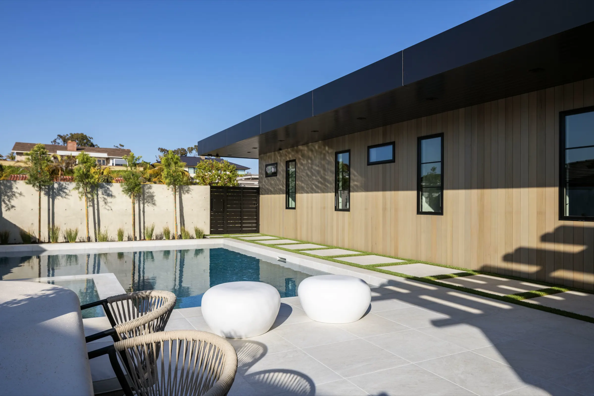

Masonry
Custom masonry and stonework.
- Natural stone and brickwork
- Retaining walls and garden walls
- Decorative columns and architectural features
- Custom block and masonry installations

Services
Custom masonry, concrete and hardscape that adds beauty, function and lasting value to your home.
From architectural stonework and custom concrete to complete outdoor living transformations, we bring skilled craftsmanship, thoughtful planning and dependable project execution to every job.
Masonry

Concrete

Pavers and hardscape

Outdoor living

Supporting services
For builders and contractors
We value the relationships we build with custom homebuilders, general contractors and construction professionals. Our team understands jobsite coordination, scheduling, communication and quality workmanship. Whether it's a specialized masonry scope or support on a full residential project, we bring professionalism and accountability to every assignment.
Larger outdoor projects often need more than masonry and hardscape, so we offer the supporting services above as part of the job. All services are provided within applicable licensing requirements and project scope.